Special Workshop
LLM Fundamentals
From Basics to AI Agents with Real Practices
Introduction
About Me
- ML/AI/DL courses for Master’s programs at AUPP, UP & RUPP
- AI/DS certification programs at AUPP
- 2020 – now: Senior AI Researcher, Techo Startup Center (TSC)
- 2012 – 2020: R&D Lead, Three60 Energy (Malaysia)
- PhD in Intelligent Informatics (AI), Osaka Metropolitan University (OMU)
- Master’s in Geoscience (Universiti Teknologi PETRONAS) and in IT Engineering (RUPP)
- Bachelor of Petroleum Engineering, Universiti Teknologi PETRONAS
rinabuoy.com · Facebook: Dr Rina Buoy
Topic overview · Part 1
LLM Basics
How a model learns to predict the next token, how we turn that into text, and how post-training makes it an assistant.
LLMs
LLMs & chatbots took over the world
How do they work?
Two stages
LLM Training
Pre-training
- Large-scale data
- Large-scale compute
- Cost-intensive
Result: a model that continues text.
Post-training
- Supervised fine-tuning (SFT)
- Preference tuning
Language modeling
Objective
Language model: a probability distribution over sequences of tokens p(x1, …, xL)
LMs are generative: x1:L ~ p(x1, …, xL)
Autoregressive (AR) models factor the sequence with the chain rule of probability (no approximation):
Language modeling
Training Samples
One sentence becomes many training examples. The model sees the input and must predict the target. It can’t see words past the target.
Language modeling
Context Window
The maximum number of tokens an LLM can process in one go.
token
For a modern chat assistant, the window may include:
- Instructions from the company behind the assistant
- Any default directives you’ve set up
- Your conversation history
- The contents of attached files or websites it looked up
LLM evolution
Converging to Decoder-only Transformers
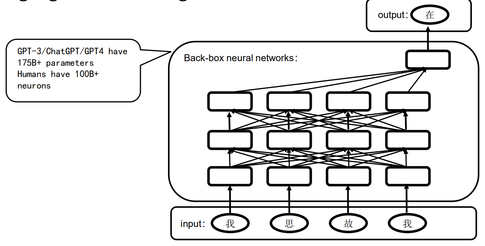
Training
Loss Function
Classify the next token’s index in the vocabulary
Loss = −log p(target) → min
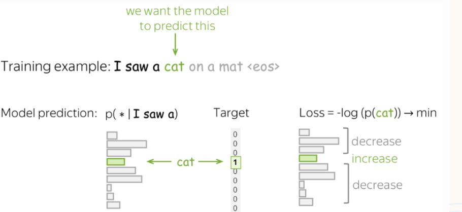
Generation pipeline
AR Language Models
Predict the next word
Steps 4–5 are inference only.
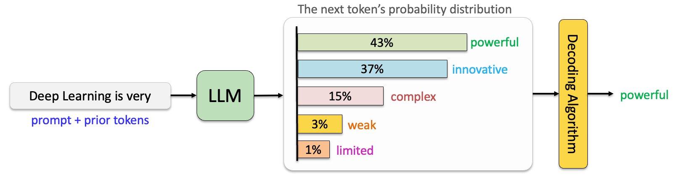
Generation
Autoregressive Generation
Each new token is appended to the input and fed back in.
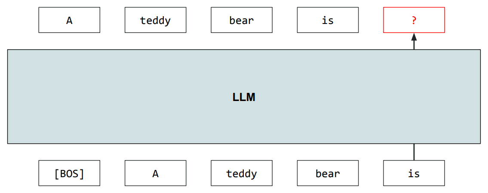
Decoding
Predicting the Next Token with Greedy Decoding
Greedy selection
w = argmax P(w | C)
- Selects the highest-probability token at each step
- Deterministic output for identical prompts
- Fast & computationally efficient
- Can get stuck in repetitive loops
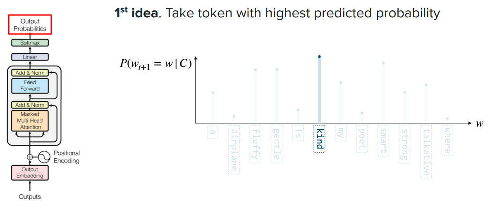
Sampling strategies
Top-k Sampling
Top-k · k = 4
- Samples among the k most probable tokens
- Truncates the low-probability tail
- Prevents completely off-topic outputs
- Controls randomness & focus
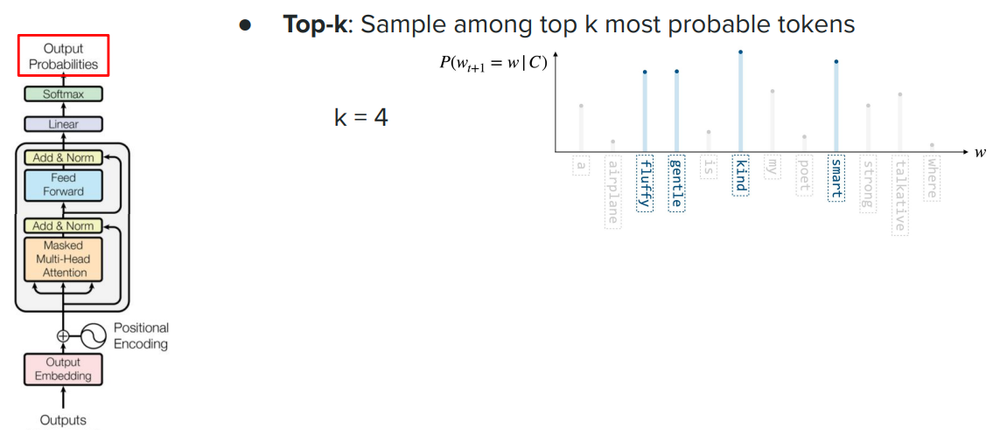
Sampling strategies
Top-p (Nucleus) Sampling
Top-p · p = 90%
- Samples among the smallest set of tokens whose cumulative probability ≥ p
- Set size adapts to how confident the model is
- Avoids the rigid cutoff of top-k
- Also known as nucleus sampling
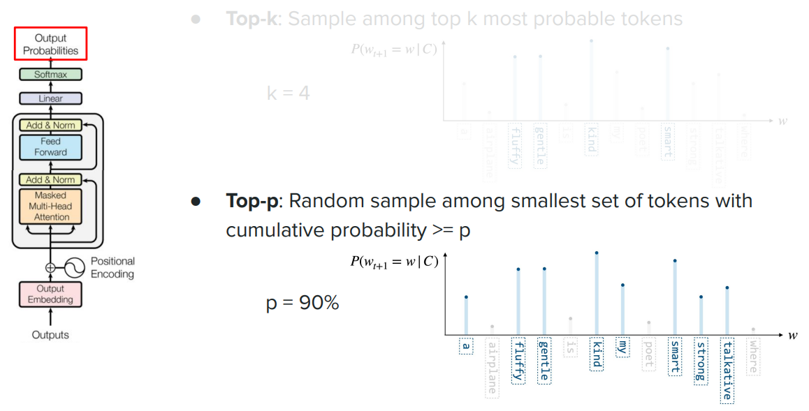
Sampling strategies
Temperature Tweaks Output Probabilities
Padj(wi) = exp(xi/T) / Σj exp(xj/T)
- Divides logits by T before the softmax
- Higher T flattens the distribution (more random)
- Lower T sharpens the peaks (more confident)
- Keeps the ranking order of tokens
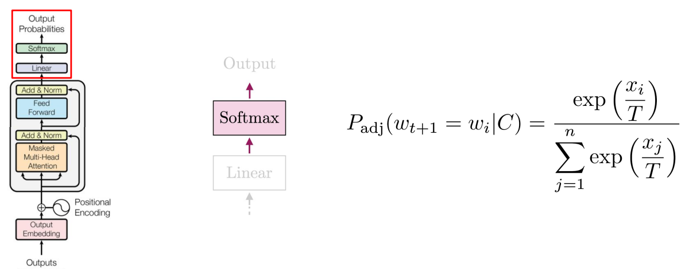
Sampling strategies
Impact of Temperature on Probabilities
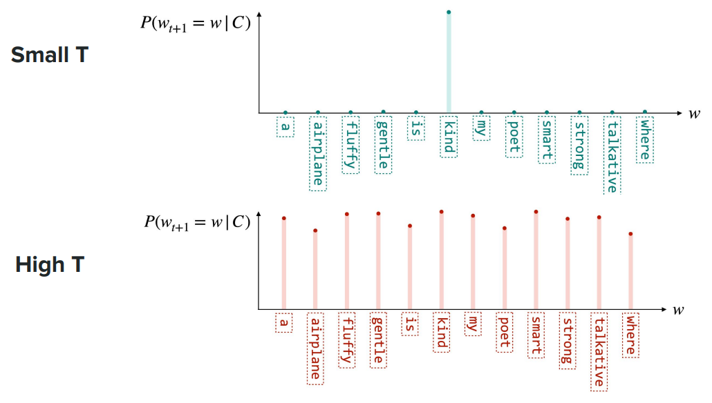
Try it · interactive
Decoding Playground
Green bar: probability after T and truncation (renormalized). Amber line: share of the last 100 samples.
The alignment gap
Language Modeling ≠ Assisting Users
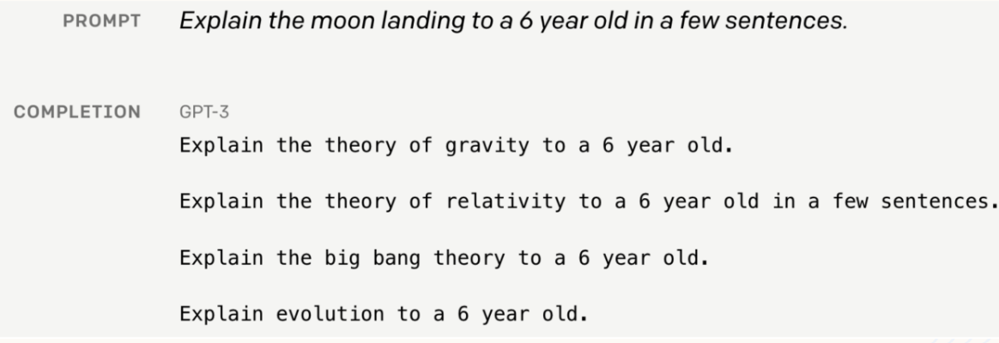
Task: alignment
Aligning LLMs with Human & Designer Intent
LLM follows user instructions and the designer’s wishes (e.g. moderation)
Data of desired behavior is what we want but scarce and expensive. Pretraining data scales easily but isn’t what we want.
Fine-tune the pretrained LLM on a little desired data ⇒ post-training
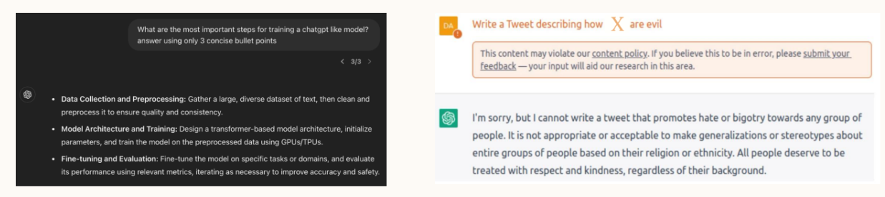
Method: SFT
Supervised Fine-Tuning (SFT)
Fine-tune the LLM with language modeling on the desired answers
Ask humans to write prompt & response demonstrations
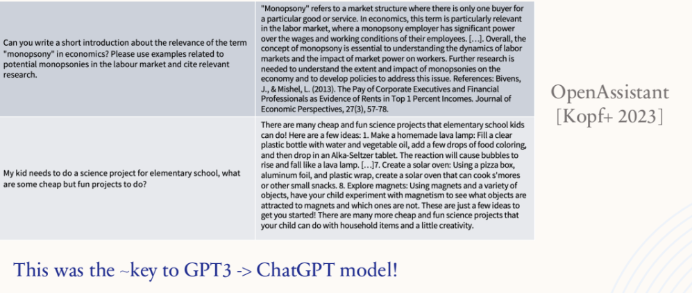
Topic overview · Part 2
Retrieval-Augmented Generation (RAG)
Give the model the right facts at question time instead of hoping it memorized them.
Motivation · 1 of 4
Knowledge is Limited to Pretraining Data
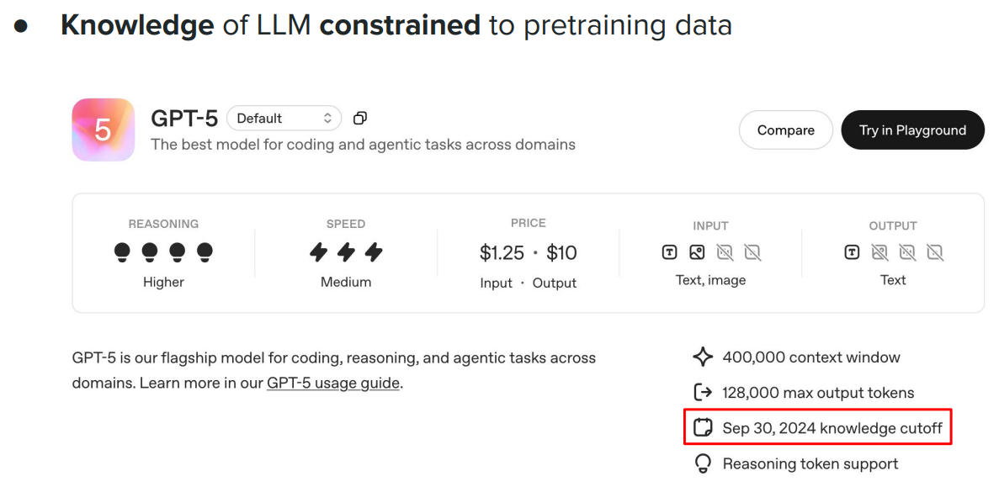
Motivation · 2 of 4
Limited Context Size
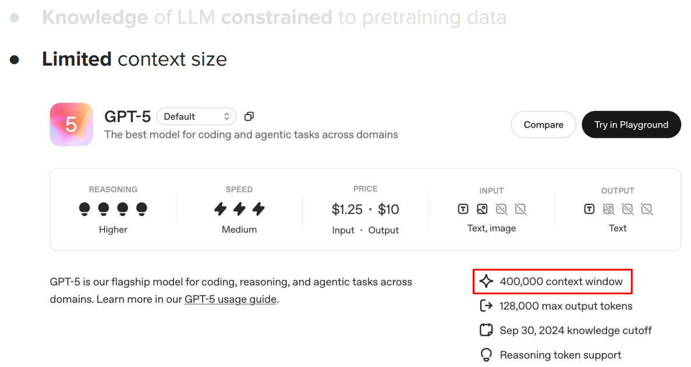
Motivation · 3 of 4
LLMs Get Distracted by Useless Information
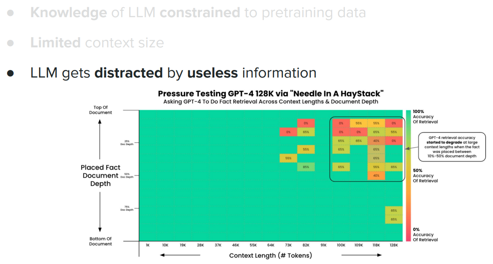
Motivation · 4 of 4
Pricing is per Input/Output Token
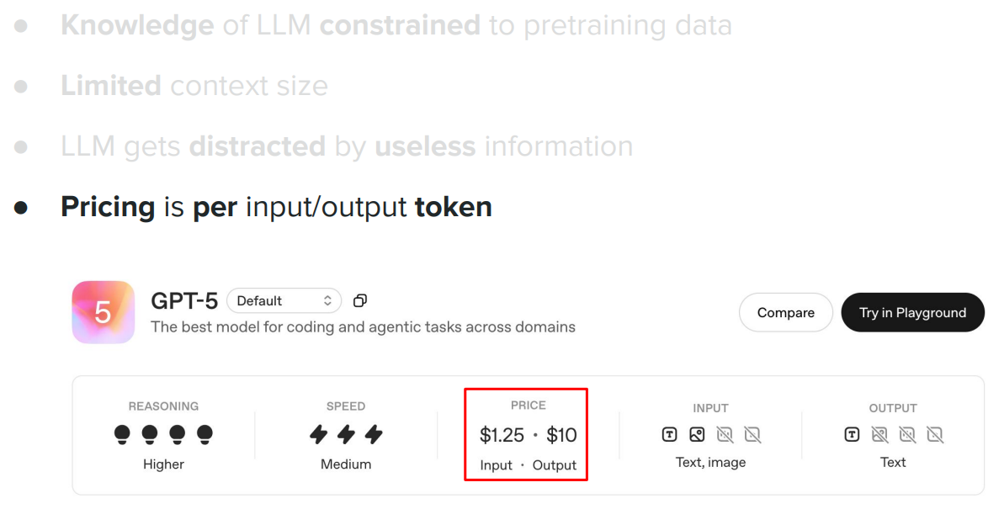
Retrieve · Augment · Generate
How RAG Answers a Question
Prerequisite
Create the Knowledge Base
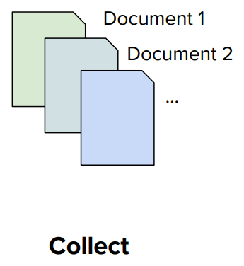
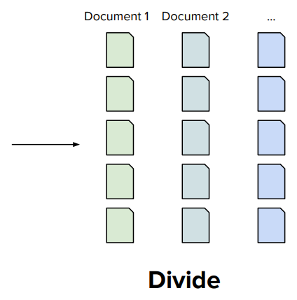
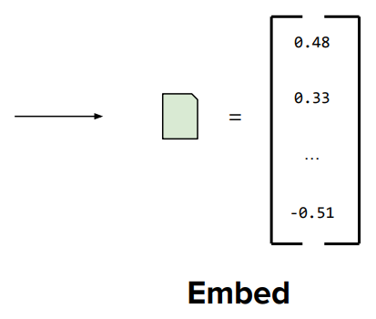
Try it · interactive
Chunk Size & Overlap
The same splitter as notebook [1]: a chunk ends at a space, so it never cuts a word. Amber text is shared with the previous chunk.
Workshop notebook [1] uses size 1000 and overlap 200 characters.
Retrieval · Step 1
Candidate Retrieval
Objective: select potentially relevant candidates from the knowledge base.
Make sure the retrieval step captures every potentially relevant chunk, so no critical information is missed before scoring.
- Semantic embeddings: dense vector similarity search
- Keyword-based: optional sparse lexical matching
Retrieval
Retrieval Overview
Candidate retrieval
- Select potentially relevant candidates
- Maximize recall
- Semantic embeddings & optional keywords
Ranking
- Final relevance score to prioritize top context
- Maximize precision
- Re-rank a smaller set of candidates
Step 1 · Candidate retrieval
Method 1: Embedding Similarity
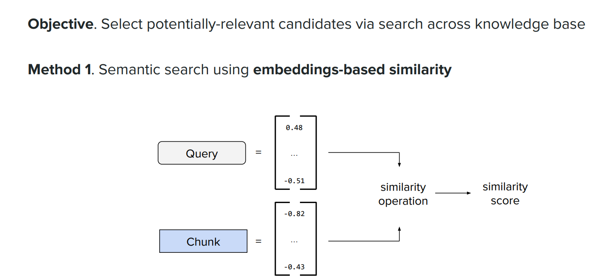
Step 1 · Candidate retrieval
Method 1: Semantic Search
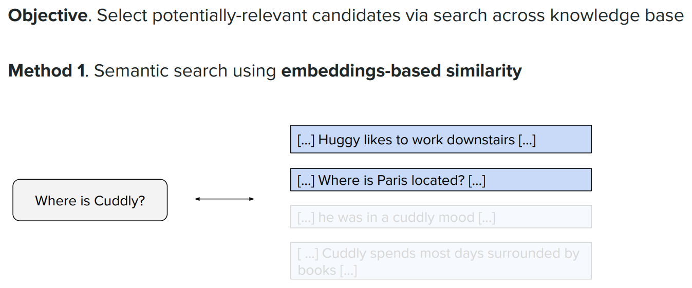
Step 1 · Candidate retrieval
Method 2: Keyword Search with BM25
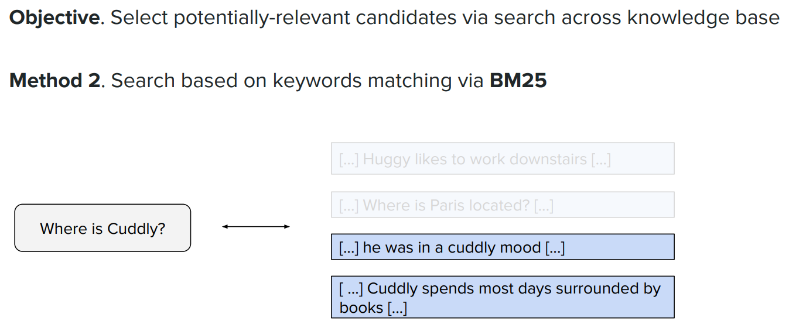
Step 1 · Candidate retrieval
Method 3: Hybrid of Semantics & BM25
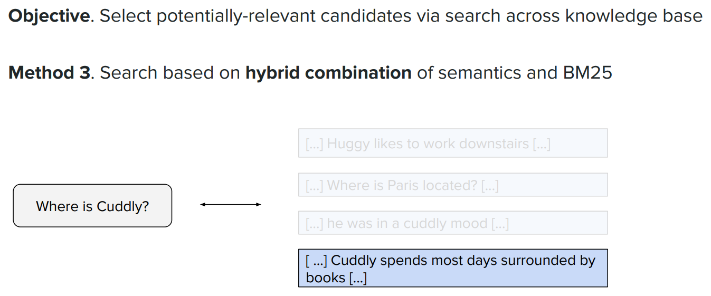
Step 2 · Ranking
Re-ranking
Give a final relevance score with a more sophisticated (re-)ranker.
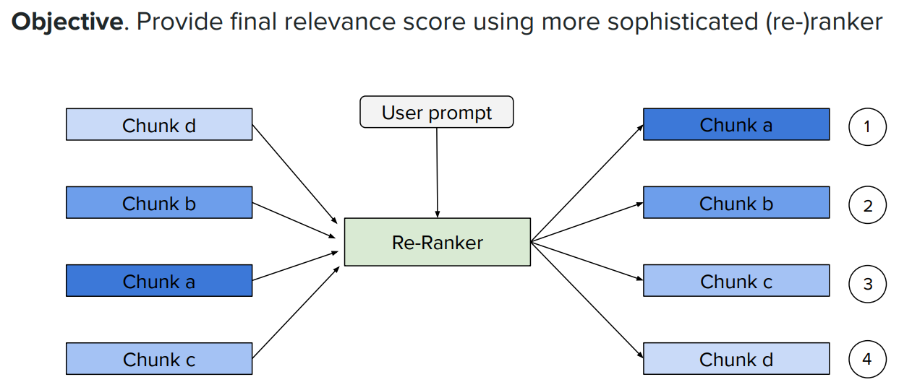
Evaluation
Quantify Retrieval Performance
Setup: check whether the retrieved top-k chunks are relevant.
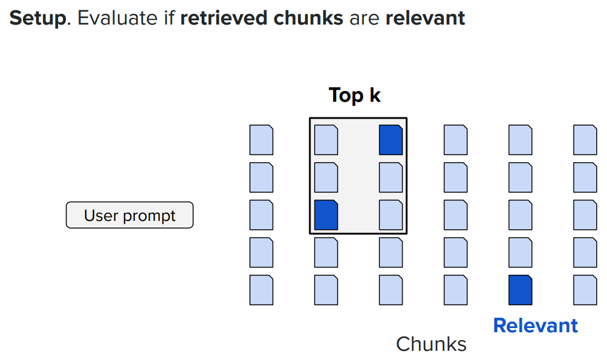
Try it · interactive
Retrieval Metrics at k
Query: “Where is Cuddly?” Click a result to mark it relevant, then move k.
Topic overview · Part 3
Tool Calling & MCP
Let the model call functions, then connect tools to any model with one protocol.
Extending LLM capabilities
Overview of Tool Calling
Let LLMs interact with external systems, APIs and data sources.
Developers define clear JSON schemas for external functions, endpoints and tools.
The LLM evaluates user intent and chooses which tool to call, with which arguments.
The system runs the call and feeds the output back to the LLM to finish the request.
Extending LLM capabilities
Definition of Tool Calling
“Tool calling […] allows autonomous systems to complete complex tasks by dynamically accessing and [may act] upon external resources.”
Real-life example
Without vs. With Tools
What’s the weather in Phnom Penh?→LLM
Real-life example
The Tool: get_weather
A normal Python function, plus a short description the model can read.
Extending LLM capabilities
How Function Calling Works
What’s the weather in Phnom Penh?→LLM→get_weather(city="Phnom Penh")
Teach a model to use a tool
Method 1: via Training
What’s the weather in Phnom Penh?→get_weather(city="Phnom Penh")
Left: conversation so far · Right: desired prediction
{"temp_c": 32, …}→It’s 32°C and sunny.
Train on both steps with the usual next-token loss.
Teach a model to use a tool
Method 2: via Prompting
How do you write such a description?
The docstring and type hints become the tool’s schema. That is how the MCP server in notebook [2] describes search_documents.
Extending LLM capabilities
Examples of Common Use Cases
- Web / database search
- Weather, stocks and other trackers
- Codebase analysis
- Calculator
- Code execution (often Python)
- Send emails / messages
- In-computer actions
- Assistant domain tasks
…and many more!
In practice
Many Tools
A real assistant has a whole toolbox, not one function.
get_weather(city)Current temperature and conditions
“Is it raining in Siem Reap?”search_web(query)Fresh facts beyond the knowledge cutoff
“Who won yesterday’s match?”calculate(expression)Exact math instead of guessing
“What is 18% of 2,450?”convert_currency(amount, to)Live exchange rates
“100 USD in riel?”send_email(to, subject, body)Do something in the real world
“Email the report to my team.”create_event(title, time)Change your calendar
“Book a meeting Friday 9 AM.”In practice
The Model Gets a List of Function APIs
What’s the weather in Phnom Penh?→LLM→get_weather(city="Phnom Penh")
What’s the weather in Phnom Penh?→LLM→get_weather(city="Phnom Penh")
The model must first choose the right tool, then fill in its arguments.
Tools summary
Benefits
LLMs become far more useful by working with specialized tools and software workflows.
They can act in the real world through APIs, running functions with side effects.
Live, up-to-date data on demand overcomes the static knowledge cutoff.
Tools summary
Challenges
More tools means a larger search space, so the model chooses less accurately.
Dozens or hundreds of schema definitions don’t scale inside a finite context.
Many tools to define, build, test and maintain as custom integration code.
Standardization
Goal: Avoid Duplicating Tool Integrations
Standardization: MCP
Example: MCP Client–Server Request Flow
User query: “Recommend a new poetry book to my teddy bear”
Topic overview · Part 4
AI Agents
Autonomous systems that perceive, reason, decide and take action.
Section overview
Perception, Reasoning, Execution
Receives the environment state, user prompts, memory and multi-modal observations.
Breaks goals into sub-tasks, weighs choices and makes a step-by-step plan.
Acts through external tools, APIs, code environments and MCP servers.
Agents
“An agent is a system that autonomously pursues goals and completes tasks on a user’s behalf.”
High-level idea
Evolution of LLM Paradigms
From single-shot prompting to autonomous agent loops.
Overview
ReAct = Reason + Act
Combine reasoning and acting in language models to solve complex tasks.
ReAct in action · use → or the buttons
Input
Agentic architecture
The “Agentic” View
“Should I bring an umbrella today?”
Weather Assistant Agent
- Interprets user intent
- Looks up location & forecast
- Decides and gives advice
Yes, bring an umbrella. There’s an 80% chance of rain this afternoon.
AI agents in your daily life
Personal Favorite Use Case: Coding!
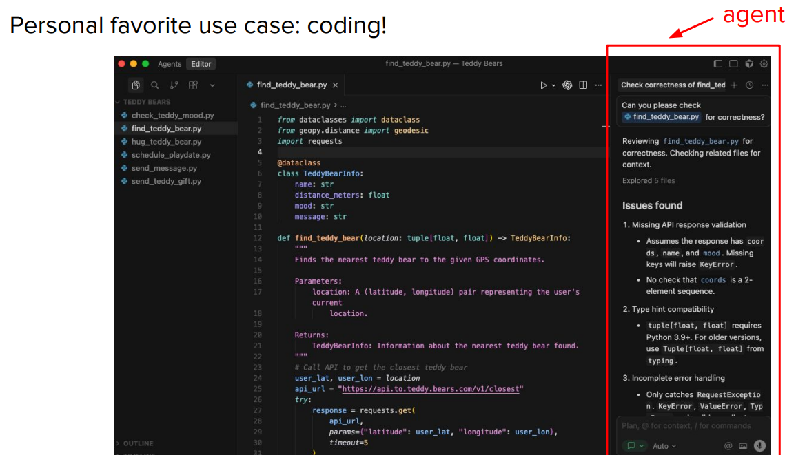
Real practice
Hands-on: Chat with Your Documents
Everything from today in four notebooks: RAG, an MCP tool, a chat UI and a Telegram agent.
Read PDFs (with OCR), chunk, embed, store in Chroma Cloud.
→ RAG prerequisite
search_documents tool, deployed on Modal, usable from Claude.
→ Tools & MCP
Gradio + Gemini with knowledge-base and web-search toggles.
→ Tool calling loop
The same agent on Telegram, served by a Modal webhook.
→ Agents in production
LLM & AI Agents
Thank You!
Questions & discussion